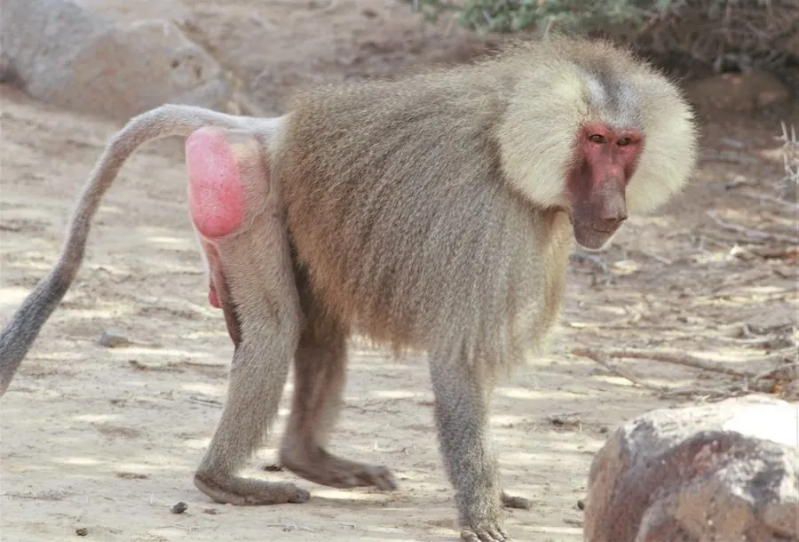

哺乳动物 · 动物界
阿拉伯狒狒 Papio hamadryas

分布在非洲之角与阿拉伯半岛的狒狒，雄性肩部披银色长毛，组成一雄多雌的家族并结成庞大群体，组织严密。
- 分类
- 门脊索动物门纲哺乳纲目灵长目科猴科属狒狒属
- 栖息环境
- 非洲之角与阿拉伯半岛西南部的半荒漠、稀树草原和岩石山地
- 地理分布
- 埃塞俄比亚、索马里、苏丹及阿拉伯半岛西南部
- 保护级别
- IUCN 无危（LC）
物种志
阿拉伯狒狒体长 0.6–0.8 米，体重 10–30 kg，雄性明显大于雌性。雄性肩部、颈部和背部覆银色至灰白色的长毛，像披着一件斗篷；面部裸露呈粉色，吻部较长，雌性毛色较暗淡。雄性的犬齿发达，常用来威吓对手。
阿拉伯狒狒分布于非洲之角（埃塞俄比亚、索马里、苏丹）和阿拉伯半岛西南部，栖息于半荒漠、稀树草原和岩石山地。它白天在地面活动，以草、种子、果实、根茎和昆虫为食，夜间在岩壁上休息。群体结构复杂：一只雄性统领 2–6 只雌性组成“家族”，多个家族又结成数十至数百只的族群，雄性会通过控制雌性和相互结盟维持地位。雌性妊娠期约 170–180 天，每胎 1 仔。阿拉伯狒狒适应力强，种群总体稳定。
形态与习性
- 食性草、种子、果实、根茎与昆虫
- 体长0.6–0.8 m
- 体重10–30 kg，雄性明显大于雌性
- 寿命约 25–30 年
- 繁殖妊娠期约 170–180 天，每胎 1 仔
- 社会结构一雄多雌的家族再组成数十至数百只的族群
- 外形雄性肩背披银色长毛
趣味知识
- 阿拉伯狒狒的雄性肩背披着银色长毛，像披了一件斗篷。
- 一只雄狒狒统领 2–6 只雌性组成家族，多个家族结成大群。
- 它们白天在地面觅食，夜间爬到岩壁上休息以躲避天敌。
- 雄性通过结盟和控制雌性来维持自己在群体中的地位。